Medienübersicht
Alle Bilder, Audios und Videos dieser App mit ihrer Quelle und ihrer Lizenz.
Bilder
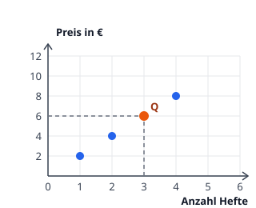
images/zuordnungen-hefte-punkte.svgQuelle: eigene Zeichnung. Lizenz: CC-BY-4.0.Verwendet auf: Tabelle und Koordinatensystem
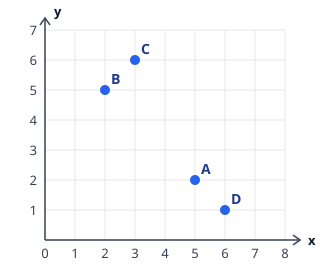
images/zuordnungen-punkte-ablesen.svgQuelle: eigene Zeichnung. Lizenz: CC-BY-4.0.Verwendet auf: Tabelle und Koordinatensystem
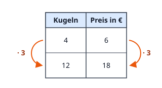
images/zuordnungen-faktor.svgQuelle: eigene Zeichnung. Lizenz: CC-BY-4.0.Verwendet auf: Proportionale Zuordnungen
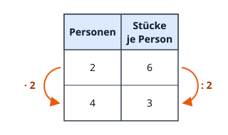
images/zuordnungen-produkt.svgQuelle: eigene Zeichnung. Lizenz: CC-BY-4.0.Verwendet auf: Antiproportionale Zuordnungen

images/zuordnungen-graph-proportional.svgQuelle: eigene Zeichnung. Lizenz: CC-BY-4.0.Verwendet auf: Graphen von Zuordnungen

images/zuordnungen-graph-hyperbel.svgQuelle: eigene Zeichnung. Lizenz: CC-BY-4.0.Verwendet auf: Graphen von Zuordnungen

images/zuordnungen-taxi.svgQuelle: eigene Zeichnung. Lizenz: CC-BY-4.0.Verwendet auf: Graphen von Zuordnungen

images/zuordnungen-vier-graphen.svgQuelle: eigene Zeichnung. Lizenz: CC-BY-4.0.Verwendet auf: Graphen von Zuordnungen
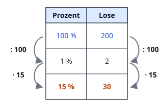
images/prozent-dreisatz.svgQuelle: eigene Zeichnung. Lizenz: CC-BY-4.0.Verwendet auf: Den Prozentwert berechnen
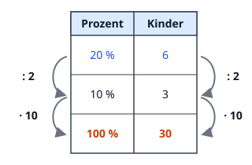
images/prozent-rueckwaerts.svgQuelle: eigene Zeichnung. Lizenz: CC-BY-4.0.Verwendet auf: Prozentsatz und Grundwert berechnen
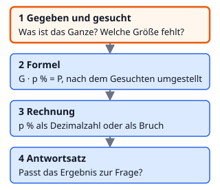
images/prozent-vier-schritte.svgQuelle: eigene Zeichnung. Lizenz: CC-BY-4.0.Verwendet auf: Sachaufgaben zur Prozentrechnung
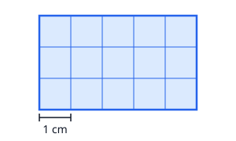
images/flaechen-kaestchen.svgQuelle: eigene Zeichnung. Lizenz: CC-BY-4.0.Verwendet auf: Flächeninhalt und Umfang von Rechteck und Quadrat

images/flaechen-flaeche-umfang.svgQuelle: eigene Zeichnung. Lizenz: CC-BY-4.0.Verwendet auf: Flächeninhalt und Umfang von Rechteck und Quadrat
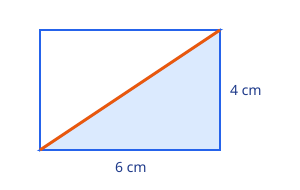
images/flaechen-rechteck-halbiert.svgQuelle: eigene Zeichnung. Lizenz: CC-BY-4.0.Verwendet auf: Flächeninhalt und Umfang des Dreiecks
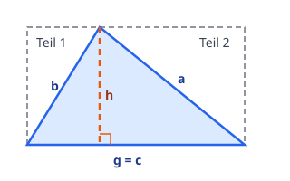
images/flaechen-dreieck-im-rechteck.svgQuelle: eigene Zeichnung. Lizenz: CC-BY-4.0.Verwendet auf: Flächeninhalt und Umfang des Dreiecks
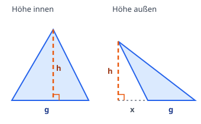
images/flaechen-dreieck-hoehen.svgQuelle: eigene Zeichnung. Lizenz: CC-BY-4.0.Verwendet auf: Flächeninhalt und Umfang des Dreiecks

images/flaechen-welche-hoehe.svgQuelle: eigene Zeichnung. Lizenz: CC-BY-4.0.Verwendet auf: Flächeninhalt und Umfang des Dreiecks

images/flaechen-parallelogramm-kaestchen.svgQuelle: eigene Zeichnung. Lizenz: CC-BY-4.0.Verwendet auf: Flächeninhalt und Umfang von Parallelogramm und Trapez
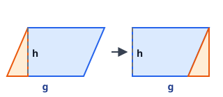
images/flaechen-parallelogramm-umlegen.svgQuelle: eigene Zeichnung. Lizenz: CC-BY-4.0.Verwendet auf: Flächeninhalt und Umfang von Parallelogramm und Trapez

images/flaechen-trapez-verdoppelt.svgQuelle: eigene Zeichnung. Lizenz: CC-BY-4.0.Verwendet auf: Flächeninhalt und Umfang von Parallelogramm und Trapez

images/flaechen-parallelogramm-aufgabe.svgQuelle: eigene Zeichnung. Lizenz: CC-BY-4.0.Verwendet auf: Flächeninhalt und Umfang von Parallelogramm und Trapez
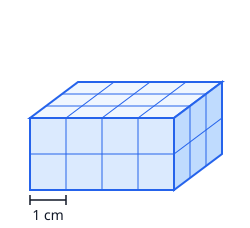
images/flaechen-quader-wuerfelchen.svgQuelle: eigene Zeichnung. Lizenz: CC-BY-4.0.Verwendet auf: Volumen von Quader und Würfel
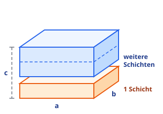
images/flaechen-quader-schichten.svgQuelle: eigene Zeichnung. Lizenz: CC-BY-4.0.Verwendet auf: Volumen von Quader und Würfel
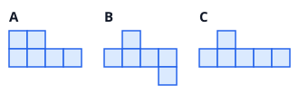
images/flaechen-wuerfelnetze.svgQuelle: eigene Zeichnung. Lizenz: CC-BY-4.0.Verwendet auf: Netz und Oberfläche von Quader und Würfel

images/flaechen-quader-netz.svgQuelle: eigene Zeichnung. Lizenz: CC-BY-4.0.Verwendet auf: Netz und Oberfläche von Quader und Würfel
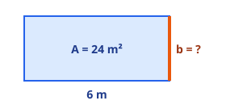
images/flaechen-rechteck-breite.svgQuelle: eigene Zeichnung. Lizenz: CC-BY-4.0.Verwendet auf: Formeln umstellen
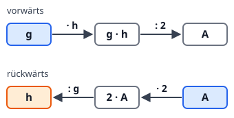
images/flaechen-umkehren.svgQuelle: eigene Zeichnung. Lizenz: CC-BY-4.0.Verwendet auf: Formeln umstellen

images/terme-rechteck.svgQuelle: eigene Zeichnung. Lizenz: CC-BY-4.0.Verwendet auf: Terme aufstellen
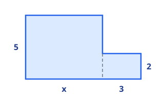
images/terme-zwei-rechtecke.svgQuelle: eigene Zeichnung. Lizenz: CC-BY-4.0.Verwendet auf: Terme aufstellen
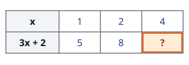
images/terme-wertetabelle.svgQuelle: eigene Zeichnung. Lizenz: CC-BY-4.0.Verwendet auf: Werte von Termen berechnen
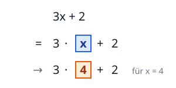
images/terme-einsetzen.svgQuelle: eigene Zeichnung. Lizenz: CC-BY-4.0.Verwendet auf: Werte von Termen berechnen
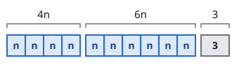
images/terme-staebe.svgQuelle: eigene Zeichnung. Lizenz: CC-BY-4.0.Verwendet auf: Gleichartige Glieder zusammenfassen
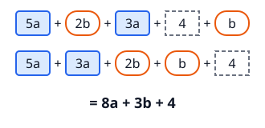
images/terme-sortieren.svgQuelle: eigene Zeichnung. Lizenz: CC-BY-4.0.Verwendet auf: Gleichartige Glieder zusammenfassen
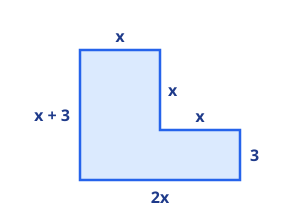
images/terme-l-figur.svgQuelle: eigene Zeichnung. Lizenz: CC-BY-4.0.Verwendet auf: Gleichartige Glieder zusammenfassen
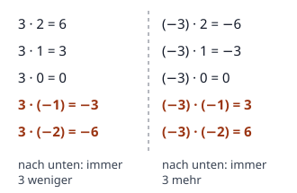
images/terme-vorzeichen-muster.svgQuelle: eigene Zeichnung. Lizenz: CC-BY-4.0.Verwendet auf: Produkte von Termen

images/terme-flaeche-zusammengesetzt.svgQuelle: eigene Zeichnung. Lizenz: CC-BY-4.0.Verwendet auf: Produkte von Termen

images/wahrscheinlichkeit-wuerfel.svgQuelle: eigene Zeichnung. Lizenz: CC-BY-4.0.Verwendet auf: Ergebnisraum und Laplace-Wahrscheinlichkeit

images/wahrscheinlichkeit-gluecksrad.svgQuelle: eigene Zeichnung. Lizenz: CC-BY-4.0.Verwendet auf: Ergebnisraum und Laplace-Wahrscheinlichkeit, Baumdiagramm

images/wahrscheinlichkeit-urne.svgQuelle: eigene Zeichnung. Lizenz: CC-BY-4.0.Verwendet auf: Ergebnisraum und Laplace-Wahrscheinlichkeit

images/wahrscheinlichkeit-baum-muenze.svgQuelle: eigene Zeichnung. Lizenz: CC-BY-4.0.Verwendet auf: Baumdiagramm

images/wahrscheinlichkeit-baum-urne.svgQuelle: eigene Zeichnung. Lizenz: CC-BY-4.0.Verwendet auf: Baumdiagramm

images/wahrscheinlichkeit-baum-frage.svgQuelle: eigene Zeichnung. Lizenz: CC-BY-4.0.Verwendet auf: Baumdiagramm

images/wahrscheinlichkeit-pfad-urne.svgQuelle: eigene Zeichnung. Lizenz: CC-BY-4.0.Verwendet auf: Pfadregeln
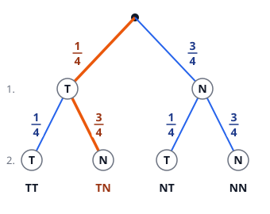
images/wahrscheinlichkeit-baum-gluecksrad.svgQuelle: eigene Zeichnung. Lizenz: CC-BY-4.0.Verwendet auf: Pfadregeln
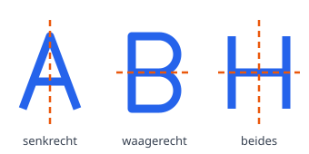
images/symmetrie-achsen.svgQuelle: eigene Zeichnung. Lizenz: CC-BY-4.0.Verwendet auf: Achsen- und Punktsymmetrie erkennen
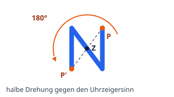
images/symmetrie-punkt.svgQuelle: eigene Zeichnung. Lizenz: CC-BY-4.0.Verwendet auf: Achsen- und Punktsymmetrie erkennen
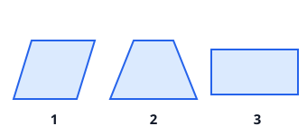
images/symmetrie-figuren.svgQuelle: eigene Zeichnung. Lizenz: CC-BY-4.0.Verwendet auf: Achsen- und Punktsymmetrie erkennen

images/symmetrie-spiegeln-start.svgQuelle: eigene Zeichnung. Lizenz: CC-BY-4.0.Verwendet auf: Spiegeln und Drehen
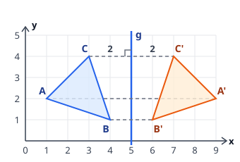
images/symmetrie-spiegeln.svgQuelle: eigene Zeichnung. Lizenz: CC-BY-4.0.Verwendet auf: Spiegeln und Drehen

images/symmetrie-drehen.svgQuelle: eigene Zeichnung. Lizenz: CC-BY-4.0.Verwendet auf: Spiegeln und Drehen

images/symmetrie-schraege-achse.svgQuelle: eigene Zeichnung. Lizenz: CC-BY-4.0.Verwendet auf: Spiegeln und Drehen

images/winkel-ecken.svgQuelle: eigene Zeichnung. Lizenz: CC-BY-4.0.Verwendet auf: Winkelsumme in Dreieck und Viereck
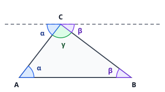
images/winkel-parallele.svgQuelle: eigene Zeichnung. Lizenz: CC-BY-4.0.Verwendet auf: Winkelsumme in Dreieck und Viereck
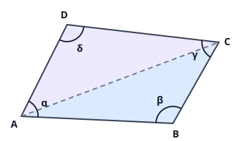
images/winkel-viereck.svgQuelle: eigene Zeichnung. Lizenz: CC-BY-4.0.Verwendet auf: Winkelsumme in Dreieck und Viereck
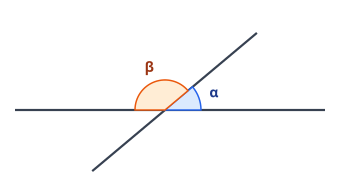
images/winkel-nebenwinkel.svgQuelle: eigene Zeichnung. Lizenz: CC-BY-4.0.Verwendet auf: Winkel an Geradenkreuzungen

images/winkel-kreuzung.svgQuelle: eigene Zeichnung. Lizenz: CC-BY-4.0.Verwendet auf: Winkel an Geradenkreuzungen

images/winkel-parallelen.svgQuelle: eigene Zeichnung. Lizenz: CC-BY-4.0.Verwendet auf: Winkel an Geradenkreuzungen
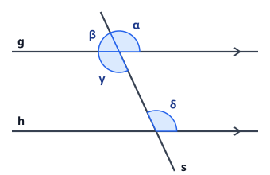
images/winkel-paare.svgQuelle: eigene Zeichnung. Lizenz: CC-BY-4.0.Verwendet auf: Winkel an Geradenkreuzungen

images/winkel-nicht-parallel.svgQuelle: eigene Zeichnung. Lizenz: CC-BY-4.0.Verwendet auf: Winkel an Geradenkreuzungen

images/winkel-halbierende.svgQuelle: eigene Zeichnung. Lizenz: CC-BY-4.0.Verwendet auf: Winkel an Geradenkreuzungen

images/brueche-pizza.svgQuelle: eigene Zeichnung. Lizenz: CC-BY-4.0.Verwendet auf: Brüche und Dezimalbrüche addieren und subtrahieren
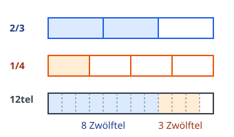
images/brueche-hauptnenner.svgQuelle: eigene Zeichnung. Lizenz: CC-BY-4.0.Verwendet auf: Brüche und Dezimalbrüche addieren und subtrahieren
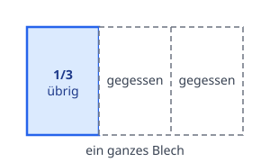
images/brueche-drittel.svgQuelle: eigene Zeichnung. Lizenz: CC-BY-4.0.Verwendet auf: Brüche und Dezimalbrüche multiplizieren und dividieren

images/brueche-rechteck-modell.svgQuelle: eigene Zeichnung. Lizenz: CC-BY-4.0.Verwendet auf: Brüche und Dezimalbrüche multiplizieren und dividieren

images/brueche-reihenfolge.svgQuelle: eigene Zeichnung. Lizenz: CC-BY-4.0.Verwendet auf: Klammern und Punkt vor Strich
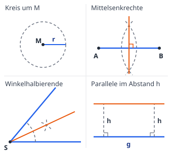
images/w2-grundkonstruktionen.svgQuelle: eigene Zeichnung. Lizenz: CC-BY-4.0.Verwendet auf: Die Planfigur

images/w2-planfigur-start.svgQuelle: eigene Zeichnung. Lizenz: CC-BY-4.0.Verwendet auf: Die Planfigur
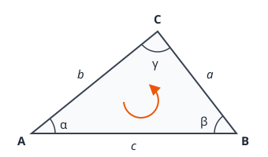
images/w2-planfigur.svgQuelle: eigene Zeichnung. Lizenz: CC-BY-4.0.Verwendet auf: Die Planfigur
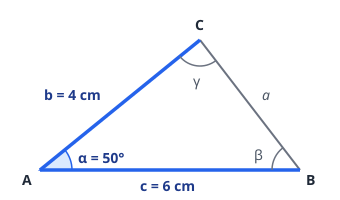
images/w2-planfigur-beispiel.svgQuelle: eigene Zeichnung. Lizenz: CC-BY-4.0.Verwendet auf: Die Planfigur

images/w2-planfigur-fehler.svgQuelle: eigene Zeichnung. Lizenz: CC-BY-4.0.Verwendet auf: Die Planfigur
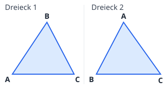
images/w2-planfigur-richtung.svgQuelle: eigene Zeichnung. Lizenz: CC-BY-4.0.Verwendet auf: Die Planfigur

images/w2-kongruenzsaetze.svgQuelle: eigene Zeichnung. Lizenz: CC-BY-4.0.Verwendet auf: Kongruenzsätze

images/w2-ssw.svgQuelle: eigene Zeichnung. Lizenz: CC-BY-4.0.Verwendet auf: Kongruenzsätze
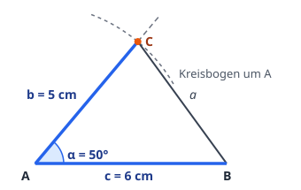
images/w2-konstruktion-sws.svgQuelle: eigene Zeichnung. Lizenz: CC-BY-4.0.Verwendet auf: Schritte einer Konstruktion

images/w2-linien.svgQuelle: eigene Zeichnung. Lizenz: CC-BY-4.0.Verwendet auf: Schritte einer Konstruktion

images/w2-hoehe-konstruktion.svgQuelle: eigene Zeichnung. Lizenz: CC-BY-4.0.Verwendet auf: Schritte einer Konstruktion
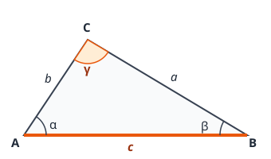
images/w2-groesste-seite.svgQuelle: eigene Zeichnung. Lizenz: CC-BY-4.0.Verwendet auf: Winkel berechnen und Konstruktion prüfen

images/w2-hoehe-winkel.svgQuelle: eigene Zeichnung. Lizenz: CC-BY-4.0.Verwendet auf: Winkel berechnen und Konstruktion prüfen

images/w2-winkelhalbierende-aufgabe.svgQuelle: eigene Zeichnung. Lizenz: CC-BY-4.0.Verwendet auf: Winkel berechnen und Konstruktion prüfen
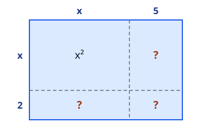
images/w1-rechteck-klammern.svgQuelle: eigene Zeichnung. Lizenz: CC-BY-4.0.Verwendet auf: Klammern auflösen
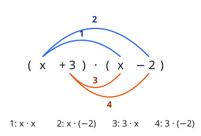
images/w1-jedes-mit-jedem.svgQuelle: eigene Zeichnung. Lizenz: CC-BY-4.0.Verwendet auf: Klammern auflösen
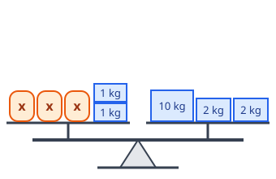
images/w1-waage.svgQuelle: eigene Zeichnung. Lizenz: CC-BY-4.0.Verwendet auf: Gleichungen lösen
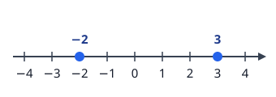
images/w1-zahlenstrahl-start.svgQuelle: eigene Zeichnung. Lizenz: CC-BY-4.0.Verwendet auf: Ungleichungen lösen

images/w1-zahlenstrahl-spiegeln.svgQuelle: eigene Zeichnung. Lizenz: CC-BY-4.0.Verwendet auf: Ungleichungen lösen

images/w1-nullprodukt-zweige.svgQuelle: eigene Zeichnung. Lizenz: CC-BY-4.0.Verwendet auf: Satz vom Nullprodukt
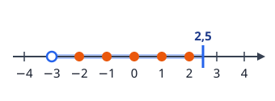
images/w1-zahlenstrahl-menge.svgQuelle: eigene Zeichnung. Lizenz: CC-BY-4.0.Verwendet auf: Lösungsmenge und Grundmenge
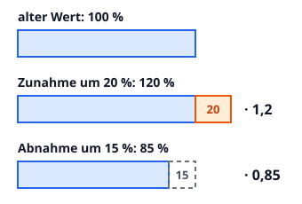
images/w3-faktor.svgQuelle: eigene Zeichnung. Lizenz: CC-BY-4.0.Verwendet auf: Zunahme und Abnahme mit dem Faktor

images/w3-vergleich.svgQuelle: eigene Zeichnung. Lizenz: CC-BY-4.0.Verwendet auf: Um wie viel Prozent mehr oder weniger?

images/w3-kette.svgQuelle: eigene Zeichnung. Lizenz: CC-BY-4.0.Verwendet auf: Mehrere Änderungen und Prozentpunkte
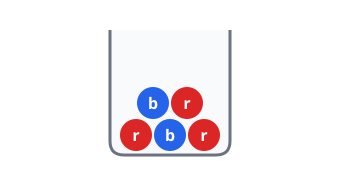
images/w4-urne-start.svgQuelle: eigene Zeichnung. Lizenz: CC-BY-4.0.Verwendet auf: Ziehen ohne Zurücklegen

images/w4-urne-vorher-nachher.svgQuelle: eigene Zeichnung. Lizenz: CC-BY-4.0.Verwendet auf: Ziehen ohne Zurücklegen
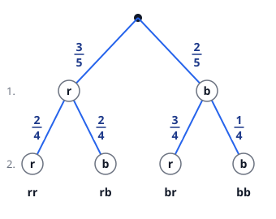
images/w4-baum-ohne.svgQuelle: eigene Zeichnung. Lizenz: CC-BY-4.0.Verwendet auf: Ziehen ohne Zurücklegen, Ereignisse als Pfade, Das Gegenereignis

images/w4-baum-frage.svgQuelle: eigene Zeichnung. Lizenz: CC-BY-4.0.Verwendet auf: Ziehen ohne Zurücklegen
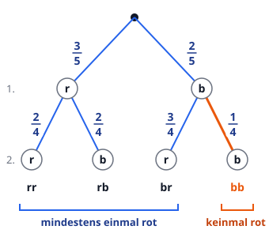
images/w4-gegenereignis.svgQuelle: eigene Zeichnung. Lizenz: CC-BY-4.0.Verwendet auf: Das Gegenereignis